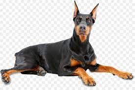
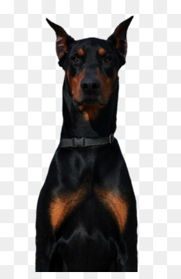
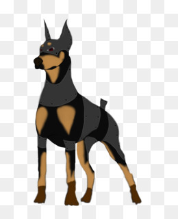

Meu Doberman

Onde surgiu o Doberman
Dobermann é uma raça de cães do grupo pinscher, oriunda da Alemanha. A raça foi desenvolvida inicialmente por Karl Friedrich Louis Dobermann em Apolda na Alemanha por volta de 1860. Foi a primeira raça criada especialmente para proteção.
Acesse o link
Caracteristicas da Raça
Raça de porte médio muito utilizada como cão de guarda.
O cachorro Doberman tem como maior característica o sentido de alerta, que influencia na escolha da espécie para a função de guarda. Mesmo assim, trata-se de um cachorro que se apega facilmente à família e preza pela lealdade, o que faz dele uma ótima companhia.